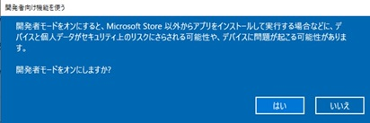
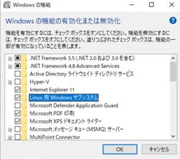

1.環境構築手順
1.1 OpenFOAMのインストール手順
(1) Windows Subsystem for Linux （WSL1）の設定
Windows Subsystem for Linux （WSL1）は、Windows10バージョン1607で正式に使えるようになりました。ただし、対応しているのは、Windows10の64bit版のみです。
➀ スタートメニューにある歯車アイコン（設定）をクリックします。
➁ 設定ウインドウで「更新とセキュリティ」をクリックします。
➂ 開発者向け機能を使うにおいて、開発者モードをオンにします。

➃ 「コントロールパネル」を開き、「プログラム」→「プログラムと機能」を選択します。そして、左側のメニューにある「Windowsの機能の有効化または無効化」をクリックします。現れたウインドウの中の「Linux用Windowsサブシステム」の項目をクリックしてチェックを入れ、「OK」ボタンを押します。

しばらくすると「必要な変更が完了しました」というメッセージが出て、Windowsの再起動を促されますので、Windowsを再起動します。